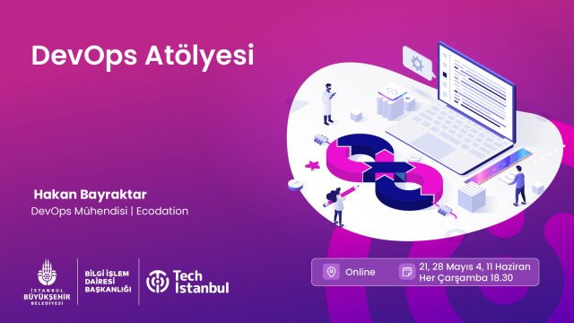
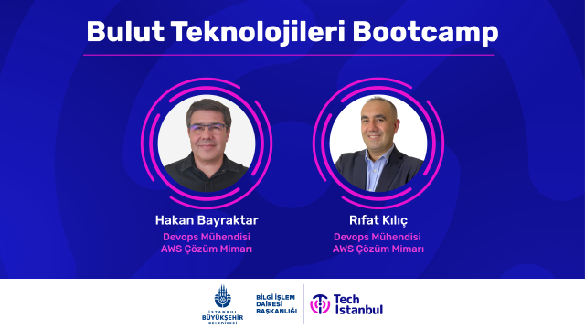

HashiCorp Certified: Terraform Associate (003) — Exam Guide (2025 Edition)
Terraform cheat sheet with key concepts, commands, best practices, and exam tips for the latest associate certification.
Read article →Cloud & DevOps Engineer with 1 year of experience in AWS, Kubernetes, Docker, Terraform, and Jenkins. I build cloud infrastructure and implement machine learning solutions with AWS SageMaker.
Cloud & DevOps Engineer
Building cloud infrastructure with AWS and implementing machine learning solutions with expertise in containerization and automation.
1+
Years Experience
AWS
Cloud Platform
ML
Expertise
About
Building scalable cloud infrastructure and implementing machine learning solutions on AWS.
Building cloud infrastructure with AWS, Kubernetes, and implementing ML solutions
1+
Year Experience
AWS
Cloud Platform
K8s
Container Orchestration
ML
Machine Learning
Cloud & DevOps Engineer with hands-on experience in AWS cloud services, Kubernetes orchestration, and Infrastructure as Code. I build scalable cloud infrastructure using Terraform and Jenkins, while also implementing machine learning solutions with AWS SageMaker, YOLOv8, and various deep learning models including EfficientNet, ResNet, and DenseNet.
Hands-on experience with AWS services including EC2, VPC, S3, RDS, Lambda, and EKS. Building scalable and cost-effective cloud infrastructure.
Experience with Docker containerization and Kubernetes orchestration. Working with EKS for container deployment and management in AWS cloud environments.
Using Terraform for infrastructure automation and provisioning. Creating repeatable and version-controlled infrastructure deployments on AWS.
Building automated CI/CD pipelines with Jenkins for continuous integration and deployment. Implementing automated build, test, and deployment workflows.
Implementing ML solutions with AWS SageMaker, YOLOv8 for object detection, and deep learning models including EfficientNet, ResNet, DenseNet, and VGG16 using transfer learning and fine-tuning techniques.
Implementing security best practices with AWS IAM, VPC design, and secure infrastructure configurations. Focus on secure cloud deployments and access management.
Projects
Projects will be added soon.
Production-grade AWS platform built with Terraform, GitOps (ArgoCD), Jenkins CI, OIDC, and observability.
Designed and operated a highly available on-prem K8s platform with GitOps, centralized identity, and secure supply chain.
Migrated legacy PHP Laravel to AWS EC2/RDS with highly available architecture and automated GitHub Actions pipeline.
Centralized Prometheus/Grafana stack for 50+ servers, shifting from reactive incidents to proactive operations.
Modernized pipelines with Docker-in-Docker across GitLab CI and Jenkins; secure, isolated builds with integrated scanning.
Architected a highly resilient, secure, and scalable Django platform on AWS using serverless containers (ECS Fargate) with Dual-Layer CI/CD and advanced observability.
Built an ELK-based platform with Beats + Logstash pipelines, optimized Elasticsearch ILM, and Kibana dashboards for real-time troubleshooting.
Terraform-provisioned DOKS + DOCR with GitHub Actions CI/CD, multi-stage builds, and secure ingress/TLS for Angular SPA delivery.
Resilient, self-healing FastAPI microservices architecture on EKS with Dual-Layer auto-scaling (HPA + Cluster Autoscaler) for zero-downtime traffic spikes.
Experience
From enterprise IT to cloud-native platforms
Freelance · Remote
Nov 2023 – Present
Oreon Development · London, UK (Remote)
Jan 2021 – Nov 2023
Freelance · Istanbul, Turkey
May 2016 – Jan 2021
Feza A.Ş. · Istanbul, Turkey
Feb 1995 – Feb 2016
Training and Labs

Workshop · Sep 30 – Oct 21, 2024
Comprehensive coverage from AWS VPC fundamentals to multi-VPC connections, secure access and file sharing methods, to high availability and Auto Scaling solutions. Four weeks of hands-on labs and real-world projects.

Workshop · May 21 – Jun 11, 2025
Learn CI/CD and GitOps concepts through real projects using GitHub Actions, Jenkins, and ArgoCD. Hands-on deployment scenarios for Python, Node.js, Django, and Java applications on AWS and GCP infrastructure.

Bootcamp · Aug 6 – Sep 28, 2024
Complete cloud journey covering AWS core services (EC2, S3, RDS, VPC), GCP/Azure/DigitalOcean fundamentals, Docker and Kubernetes container orchestration, and DevOps/CI/CD methodologies with hands-on projects.
Credentials and Education
Istanbul University
2009 – 2010
Ahmet Yesevi University
2004 – 2008
Erciyes University
1989 – 1992
Medium Articles
Read my latest articles on cloud architecture, Kubernetes, and DevOps best practices.
Terraform cheat sheet with key concepts, commands, best practices, and exam tips for the latest associate certification.
Read article →Production-ready AWS network with secure SSH access, outbound NAT, and public web tier fully codified in Terraform.
Read article →Secure on-prem to AWS connectivity with IPsec tunnels, routing, and validation steps for enterprise workloads.
Read article →Issue and renew free TLS certificates with Certbot on Amazon Linux, plus firewall and Nginx configuration.
Read article →Lock down database access by forwarding MySQL over SSH instead of exposing ports on the public internet.
Read article →Hands-on lab: design a secure VPC, add a bastion for SSH, run Apache in public subnet, validate NAT egress.
Read article →Peering fundamentals, route tables, and validation to securely link isolated AWS networks.
Read article →Hub-and-spoke TGW design to simplify routing, improve security, and scale multi-VPC connectivity.
Read article →React + MySQL app deployed on GKE with GitHub Actions builds and ArgoCD GitOps releases.
Read article →CI/CD pipeline pushes Flask container images to ECR and rolls out to ECS services with GitHub Actions.
Read article →End-to-end Jenkins pipeline to build, scan, and deploy Spring Petclinic onto an EKS cluster.
Read article →GitOps workflow deploying a Flask service to Kubernetes using ArgoCD for automated syncs.
Read article →Strategies and commands to snapshot Docker containers and images and restore them safely.
Read article →Let's Work Together
Available for freelance projects, consulting, and full-time opportunities. Let's discuss how I can help your team.